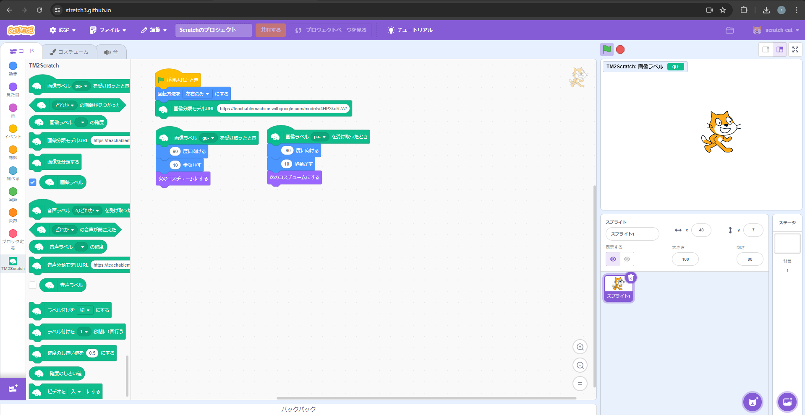

第2週目
2-1 2週目のレポートをHTMLで作る
1.内容
1週目と同様に2週目のレポートを作成した。2週目のレポートの作成が完了次第、1週目のレポートの仕上げを行った。
2.感想
1週目と同様にレポートを作成したのだが、前週よりも書き込みやコミットをスムーズに進められてとても良かったと思う。
png形式の写真のアップロードも戸惑うことなくできたため、成長を感じて嬉しかった。
3.2週目が完成した人は1週目のレポートも完成させる
2-2 機械学習体験

1.内容
松尾教授の生成AIについての動画視聴とTeachableMachineを用いた機械学習
2.感想
・動画の感想
・TeachableMachineの感想
2-3 VR（バーチャルリアリティー：Virtual Reality）会議室の体験
1.内容
WorkroomsとRobloxを用いてそれぞれのVR空間でVR体験を行った。
2.感想
・Workroomsの感想
Workroomsについて、VR空間内で自分の音声をミュートできたり画面共有できたりと、その名の通りリモートワーク向けにとても使いやすく作られているのだと感じた。
操作も比較的簡単だと感じたので、環境さえ整っていればすぐに操作に慣れることができそうだということも素晴らしいと思う。
またアバターに自由性があるのも社会的な多様性に柔軟に対応できるだろうと感じたのでとても良い機能だと思った。
・Robloxの感想
Robloxについて、私は残念ながら途中でVR酔い(=乗り物酔いに近い症状)を起こしてしまったためあまりじっくりVR空間を体験することはできなかった。
しかし実際にアバターを通して動いてみて、VRゴーグルも初めて使用してみて、とても本格的に体験できて楽しかった。
同時にプレイしていたクラスメイトと同じVR空間内で一緒に遊べるという技術の凄さを改めて実感した。